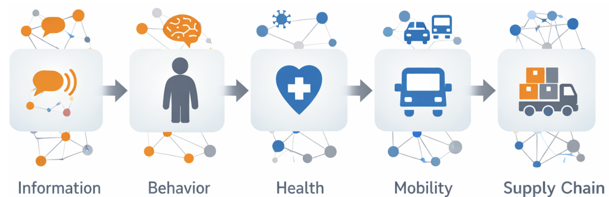

Rumor Can Cost Live
Ref: Dynamical interplay between awareness and epidemic spreading in multiplex networks — Granell, Gomez, Arenas — Physical Review Letters — 2013.
Two Systems Never Touch — Yet Risk Couples

How can two unconnected networks still couple and amplify risk?
During COVID, misinformation and disease did not interact directly, but they coupled through human decisions. A rumor changes beliefs, beliefs change actions, and actions change exposure. That is the kind of coupled network dynamics I study. These systems do not touch, yet they amplify each other.
Ref: Dynamical interplay between awareness and epidemic spreading in multiplex networks — Granell, Gomez, Arenas — Physical Review Letters — 2013.
Cascades Across Networks

A tiny perturbation can be amplified by nonlinear dynamics into a large system-level shift.
Risk can propagate across domains: information to behavior to health to mobility to supply chain.
Ref: Dynamical interplay between awareness and epidemic spreading in multiplex networks — Granell, Gomez, Arenas — Physical Review Letters — 2013.
Why Graph Dynamics Under Uncertainty Is Hard
Claim: Heterogeneity + coupling + siloed theories make uncertainty unavoidable and nontrivial.
- Heterogeneous: different domains have different state variables and data fidelity.
- Coupling: interactions happen through intermediate layers (policy/behavior/market mechanisms).
- Interdisciplinary: models exist in silos; cross-domain reuse is still rare.
- Common bottleneck: pairwise/local reasoning breaks under interactions and uncertainty.
- Therefore we need a tutorial that is task-centered and uncertainty-aware.

Ref: Temporal networks — Holme, Saramaki — Physics Reports — 2012.
What Is Uncertainty Quantification?
Claim: UQ means producing distributions (not single numbers) for unknowns and predictions.
- Point estimate answers: 'what is the most likely value?'.
- UQ answers: 'how confident are we, and how wrong could we be?'.
- Two targets: uncertainty in parameters θ, and uncertainty in future outcomes \(y^\ast\).
- Deliverables: posterior, predictive, intervals, and calibrated probabilities.
- UQ is actionable only if it changes decisions (risk, safety, resource allocation).
\[ p(\theta \mid \mathcal{D}) \]
\[ p(y^\ast \mid \mathcal{D}) \]
Ref: Bayesian Data Analysis (3rd ed.) — Gelman, Carlin, Stern, Dunson, Vehtari, Rubin — CRC Press — 2013.
Prior, Posterior, Predictive (The Minimum Toolkit)
Claim: Posterior describes what we learned; predictive describes what we expect next.
- Prior p(θ): belief before data.
- Likelihood p(D|θ): data model.
- Posterior p(θ|D): updated belief after data.
- Predictive p(\(y^\ast\)|D): integrates parameter uncertainty into future outcomes.
- Posterior supports inference; predictive supports action.
\[ p(\theta\mid\mathcal{D}) \propto p(\mathcal{D}\mid\theta)\,p(\theta) \]
\[ p(y^\ast\mid\mathcal{D}) = \int p(y^\ast\mid\theta)\,p(\theta\mid\mathcal{D})\,d\theta \]
Ref: Bayesian Data Analysis (3rd ed.) — Gelman, Carlin, Stern, Dunson, Vehtari, Rubin — CRC Press — 2013.
Credible Interval vs Prediction Interval
Claim: Credible intervals are about θ; prediction intervals are about future \(y^\ast\).
- Credible set Cα: P(θ in Cα | D)=1−α.
- Prediction interval Iα: P(\(y^\ast\) in Iα | D)=1−α.
- Prediction intervals are usually wider because they include observation noise.
- Beginners often confuse them; this tutorial will keep them separate consistently.
- Always report which interval type you are using.
\[ \Pr(\theta \in C_\alpha \mid \mathcal{D}) = 1-\alpha \]
\[ \Pr(y^\ast \in I_\alpha \mid \mathcal{D}) = 1-\alpha \]
Ref: Bayesian Data Analysis (3rd ed.) — Gelman, Carlin, Stern, Dunson, Vehtari, Rubin — CRC Press — 2013.
Aleatoric vs Epistemic Uncertainty
Claim: Aleatoric is irreducible noise; epistemic is reducible model/knowledge uncertainty.
- Aleatoric: randomness in the data-generating process (noise, inherent variability).
- Epistemic: uncertainty due to limited data or model mismatch (can shrink with better data/models).
- This distinction matters because only epistemic can be reduced by more observations.
- Many failures come from treating epistemic as aleatoric (or ignoring it).
- Variance decomposition gives a practical split between the two effects.
\[ \mathrm{Var}(Z)=\mathbb{E}[\mathrm{Var}(Z\mid\Theta)] + \mathrm{Var}(\mathbb{E}[Z\mid\Theta]) \]
\[ \text{(interpretation: aleatoric)}\quad+\quad\text{(epistemic)} \]
Ref: Strictly Proper Scoring Rules, Prediction, and Estimation — Gneiting, Raftery — JASA — 2007.
Calibration and Proper Scoring
Claim: A predictive distribution is only useful if its probabilities match reality (calibration).
- Calibration: among events predicted at probability p, about p fraction should occur.
- Coverage: empirical frequency that intervals contain the truth.
- Proper scoring rules reward calibrated + sharp forecasts (not overconfident).
- Two common scores: log score and Brier score (classification); CRPS (continuous).
- Calibration diagnostics should be reported with uncertainty estimates, not accuracy alone.
\[ \Pr(Y=1 \mid \hat{p}=p) = p \]
\[ \text{Log score: } s(p,y) = -\log p(y) \]
Ref: Strictly Proper Scoring Rules, Prediction, and Estimation — Gneiting, Raftery — JASA — 2007.
Graph Dynamics: What Are the Random Variables?
Claim: Dynamic graph problems have uncertainty in topology, latent states, and observations.
- Topology over time: adjacency \(A_t\) can evolve or be partially observed.
- Latent state on nodes/edges: \(X_t\) (e.g., belief, infection, flow, congestion).
- Observations: \(Y_t\) are noisy, missing, delayed, or aggregated versions of \(X_t\).
- Parameters: θ control transition rates, coupling strengths, and noise levels.
- This separation clarifies what to infer and what to predict.
\[ A_t \in \{0,1\}^{n\times n},\quad X_t \in \mathbb{R}^{n\times d},\quad Y_t \in \mathbb{R}^{m} \]
\[ X_{t+1} = F(X_t, A_t; \theta) + w_t \]
Ref: Temporal networks — Holme, Saramaki — Physics Reports — 2012.
Where UQ Sits: Posterior → Predictive → Decision
Claim: Graph-dynamics UQ is about propagating uncertainty from latent variables to task outputs.
- Infer latent quantities: \(p(A_{1:T}, X_{1:T}, \theta \mid \mathcal{D})\).
- Define a task query Q (e.g., cascade size, source, future state).
- Predictive distribution integrates latent uncertainty into Q.
- Decisions (interventions/policies) should consume \(p(Q\mid\mathcal{D})\), not a point estimate.
- This creates an auditable chain from evidence to action.
\[ \Theta := (A_{1:T}, X_{1:T}, \theta) \]
\[ p(Q\mid \mathcal{D}) = \int p(Q\mid \Theta)\,p(\Theta\mid \mathcal{D})\,d\Theta \]
Ref: Bayesian Data Analysis (3rd ed.) — Gelman, Carlin, Stern, Dunson, Vehtari, Rubin — CRC Press — 2013.
Three Entry Points of Uncertainty in Graph Dynamics
Claim: Structural/parametric/observational uncertainty enter different parts of the model but all affect Q.
- Structural: uncertainty in edges, communities, coupling links, or multiplex alignment.
- Parametric: uncertain rates/strengths (transmission, recovery, coupling coefficients).
- Observational: missing nodes/edges, sensor dropout, reporting delays, aggregation bias.
- The same observed data can be explained by multiple (A, θ, X) combinations.
- Practical UQ must keep all three entry points explicit.
\[ A_{ij,t}\sim \mathrm{Bernoulli}(p_{ij,t}) \]
\[ \theta \sim p(\theta\mid \mathcal{D}) \]
\[ Y_t = H_t X_t + \varepsilon_t,\quad \varepsilon_t\sim \mathcal{N}(0,R_t) \]
Ref: Discovering Latent Network Structure in Point Process Data — Linderman, Adams — ICML — 2014.
Why Uncertainty Is Not Local in Graphs
Claim: Topology and time couple variables, so local uncertainty becomes global outcome uncertainty.
- Graph connectivity breaks independence: paths overlap, so events are correlated.
- Small uncertainty on a bridge/hub can change reachability and cascade regimes.
- Near thresholds, tiny perturbations can flip the system from stable to unstable.
- Over time, errors accumulate and amplify through repeated interactions.
- This is why local confidence scores are insufficient for system risk.
\[ \text{(generic)}\quad Q = g(A_{1:T}, X_{1:T}) \]
\[ \Delta Q \approx \left\langle \nabla_A g, \Delta A \right\rangle + \left\langle \nabla_X g, \Delta X \right\rangle \]
Ref: A simple model of global cascades on random networks — Duncan J. Watts — PNAS — 2002.
Mechanism Example: Spectral Amplification Near Thresholds
Claim: In many spreading/flow systems, the dominant eigenvalue controls stability; uncertainty in A becomes amplified.
- Many linearized dynamics depend on λ_max(A) (largest eigenvalue).
- If parameters are near criticality, small topology uncertainty changes the regime.
- This converts local edge uncertainty into global risk uncertainty (tails).
- The practical signal is threshold crossing probability, not only mean trajectory.
\[ \beta_c \approx \frac{\delta}{\lambda_{\max}(A)} \]
\[ \lambda_{\max}(A+\Delta A) \approx \lambda_{\max}(A) + u^\top (\Delta A)\,u \]
Ref: Virus Spread in Networks — Van Mieghem, Omic, Kooij — IEEE/ACM Transactions on Networking — 2009.
Mechanism Example: Temporal Accumulation of Uncertainty
Claim: Even if uncertainty is small per step, sequential propagation can accumulate into large prediction bands.
- Filtering/forecasting is recursive: today’s uncertainty becomes tomorrow’s prior.
- Model mismatch + observation noise can create widening bands over time.
- In dynamic graphs, topology changes introduce additional drift uncertainty.
- Long-horizon reliability therefore depends on propagation quality, not one-step fit.
\[ X_{t+1} = F(X_t,A_t;\theta) + w_t \]
\[ \Sigma_{t+1} \approx F_t \Sigma_t F_t^\top + Q_t \quad (\text{linearized covariance propagation}) \]
Ref: A New Approach to Linear Filtering and Prediction Problems — Rudolf E. Kalman — Journal of Basic Engineering (ASME) — 1960.
Task-Centered Roadmap: Each Task Defines the Query Q
Claim: We will organize the tutorial by graph tasks; UQ is the deliverable layer for each task.
- Step 1: define the task query Q (structure, diffusion, source, state, decision, validation).
- Step 2: specify the deliverable: posterior, predictive, intervals, tail metrics, robust action.
- Step 3: choose methods that propagate uncertainty correctly through topology and time.
- Each module repeats the same template to keep comparisons consistent.
\[ p(Q\mid \mathcal{D}) = \int p(Q\mid \Theta)\,p(\Theta\mid \mathcal{D})\,d\Theta \]
| Task | Query Q | Deliverable |
|---|---|---|
| Structure inference | which edges/couplings exist | posterior over structure |
| Diffusion forecasting | future spread size/timing | predictive distribution + tails |
| Source explanation | who/where started process | credible source set |
| State estimation | hidden state over time | filtering/smoothing intervals |
| Decision/intervention | policy loss/regret | robust risk-aware action |
| Validation | calibration/coverage metrics | acceptance test report |
Ref: Temporal networks — Holme, Saramaki — Physics Reports — 2012.
Dependency Map: How Uncertainty Propagates Across Tasks
Claim: Downstream tasks consume upstream posteriors; uncertainty must be propagated end-to-end.
- Structure inference affects all downstream predictions.
- Diffusion/explanation/state models define \(p(Q\mid\Theta)\).
- Decision consumes \(p(Q\mid\mathcal{D})\); validation audits all layers.
- Breaking this chain produces overconfident and brittle outcomes.
\[ p(Z\mid \mathcal{D})=\int p(Z\mid A,\theta)\,p(A,\theta\mid \mathcal{D})\,dA\,d\theta \]
Ref: Strictly Proper Scoring Rules, Prediction, and Estimation — Gneiting, Raftery — JASA — 2007.
From Here: We Proceed Task-by-Task
Claim: The remainder of the tutorial is organized around dynamic graph tasks, each paired with UQ deliverables.
- A. Dynamic structure inference (posterior over edges/communities/couplings).
- B. Diffusion & cascades (predictive distribution + tail risk).
- C. Explanation / inverse problems (posterior over sources/paths).
- D. Graph state estimation (filtering/smoothing bands over time).
- E. Decision & intervention (robust / risk-aware actions).
- F. Validation & acceptance (calibration, coverage, stress tests).
Ref: Dynamical interplay between awareness and epidemic spreading in multiplex networks — Granell, Gomez, Arenas — Physical Review Letters — 2013.